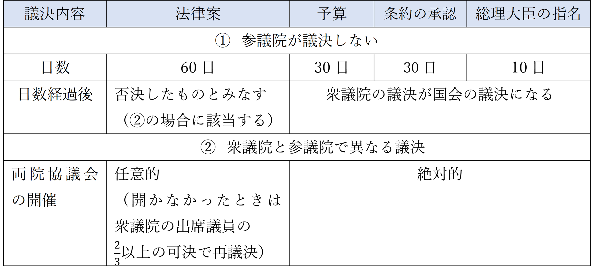

- 民法とは
- 勉強のポイント
- 解けた解けなかったで一喜一憂するのではなく、「どういう風に解いたか」や「その問題を解く上でのポイントはどこだったか （＝その問題から何を学んだか）」を意識して答え合わせをしてください。 （コレを意識するだけでほかの問題への応用力が結構変わります！）
- 演習問題 ～民法Ⅰ編～
- この制度は、「制限行為能力者の財産保護（本人の保護）」と「取引の安全性の確保（取引の相手方の保護）」という2つの目的のために設立されたものである。
-
制限行為能力者は全部で4種類ある。
- 未成年者：18歳未満の者。
- 成年被後見人：事理を弁識する能力を欠く者。
- 被保佐人：事理を弁識する能力が著しく不十分な者。
- 被補助人：事理を弁識する能力が不十分な者。
-
保護機関の権限は大きく分けて3種類ある。内容は以下の通り。
- 同意権：単独で行えない行為に対して同意を与える権利。この権利があることで、同意を得たら制限行為能力者でも単独で契約を結べる。
- 代理権：法律行為を本人に代わって行う権利。
- 取消権：保護機関の同意が必要な行為にもかかわらず制限行為能力者が同意を得ずに契約を結んでしまったとき、その契約を取り消せる権利。

-
「催告に対して確答がなかった時」のパターンは以下の二つ。
①原則：現在の状態を維持する形で確定。
②例外：被保佐人・被補助人に対しての催告なら「取り消し」に確定。
(※未成年者と成年被後見人に対しては、催告自体ができない。よって、法手代理人にしか催告できない。) -
制限行為能力を理由とする取消がされた場合、契約は「当初にさかのぼって無効」になるため、受けた利益があったら返さなければならない。
返還範囲は以下のとおり。
浪費した（ex.遊興費）：返還義務なし。
必要な費用に充てた（ex..借金の返済、生活費）：返還義務あり。
- 自然人の権利能力は死亡によって消滅するため、失踪者が、失綜宣告によって死亡したものとみなされた場合には、その者が生存していたとしても、同宣告後その取消し前にその者がした法律行為は無効である。
- 未成年者は、法定代理人が目的を定めて処分を許した財産については、法定代理人の同意を得なくとも、その目的の範囲内において自由に処分することができるが、法定代理人が目的を定めないで処分を許した財産については、個別の処分ごとに法定代理人の同意を得なければ処分することはできない。
- 未成年者が法定代理人の同意を得ずに土地の売買契約を締結した場合、当該契約の相手方は、当該未成年者が成人した後、その者に対し、1か月以上の期間を定めて、その期間内に当該契約を追認するかどうかを確答すべき旨の催告をすることができ、その者がその期間内に確答しなかったときは、追認したものとみなされる。
- 成年被後見人は、日用品の購入その他日常生活に関する行為を単独で確定的に有効になすことができるが、これ以外の法律行為については、成年後見人の同意を得ても、単独で確定的に有効になすことはできない。
- 被保佐人が、保佐人の同意を得ずに、同意が必要とされる行為をした場合、被保佐人自身のほか、保佐人も当該行為を取り消すことができる。
- ア,イ
- エ,オ
- ア,ウ,オ
- イ,ウ,エ
- ウ,エ,オ
- 成年被後見人は、精神上の障害により事理を弁識する能力を欠く常況にある者であるため、成年被後見人自身が行った、日用品の購入その他日常生活に関する行為を取り消すことができる。
- 被保佐人の相手方は、被保佐人が行為能力者とならない間に、その保佐人に対し、その権限内の行為について、1か月以上の期間を定めて、その期間内にその取り消すことができる行為を追認するかどうかを確答すべき旨の催告をすることができる。この場合において、その保佐人がその期間内に確答を発しないときは、その行為を追認したものとみなされる。
- 被保佐人は、精神上の障害により事理を弁識する能力が著しく不十分な者であるため、元本の領収や借財をするといった重要な財産上の行為を、保佐人の同意があったとしても行うことができない。
- 被補助人は、精神上の障害により事理を弁識する能力が不十分な者であるが、自己決定の尊重の趣旨から、本人以外の者の請求によって補助開始の審判をするには本人の同意が必要である。
- 制限行為能力者が行為能力者であることを信じさせるために「詐術」を用いた場合には、取消権を行使することができない。「詐術」とは、制限行為能力者が相手方に対して、積極的に術策を用いたときに限られるものではなく、単に制限行為能力者であることを黙秘しただけであっても、詐術に当たる。
- ア,ウ
- ア,オ
- イ,エ
- ア,イ,ウ
- イ,エ,オ
-
民法で登場する「瑕疵ある意思表示（完全ではない意思表示）」は全てで5つ
- 心裡留保：真意でないことを知りながら、それを相手に告げずにする意思表示。（≒冗談）
- 通謀虚偽表示：当事者が通謀（グルになること）して行った虚偽の意思表示。
- 錯誤：意思と表示が一致しない意思表示で、そのことを表意者が知らないもの。（≒勘違い、うっかりミス）
- 詐欺：相手を欺いて錯誤に陥れ、それに基づいて意思表示を行わせること。
- 強迫：恐ろしさにひるんだ状態で意思表示を行わせること。
- 意思表示は「通知が相手に到達した時点」で効力を生じる。
- 相手方が正当な理由なく意思表示が到達するのを妨げたときには、その通知は「通常到達すべきであったときに到達した」とみなされる。
-
発信後到達前の相手方の死亡
・原則：影響なし
・契約の申込み：相手方が死亡したことを知っていた...申し込みは無効
相手方が死亡したことを知らなかった...申し込みは有効 -
成年被後見人と未成年者に意思表示を行っても無意味（法定代理人に行うか、本人が成人した後に行う）
しかし、これらのものに意思表示を行ったことを法定代理人が知ったときは、当該意思表示は有効になる。 - 「錯誤」は、それが「法律行為の目的および取引上の社会通念に照らして重要なもの」であるときには取り消しができる。
- 意思表示は、表意者がその真意ではないことを知ってしたときであっても、そのためにその効力を妨げられないが、相手方がその意思表示が表意者の真意ではないことを知り、または知ることができたときは、その意思表示は無効である。また、かかる意思表示の無効は、善意の第三者に対抗することができない。
- AがBとの間で土地の仮装売買を行い、A所有の土地の登記名義をBとしていたところ、Bがその土地を自分のものであるとしてCに売却した。この場合、Cが保護されるためには、AB間の売買契約が通謀虚偽表示に基づくものであることにつき、Cが善意かつ無過失であることが必要である。
- 意思表示に対応する意思を欠く錯誤があり、その錯誤が法律行為の目的および取引上の社会通念に照らして重要なものであるときは、当該意思表示は、原則として取り消すことができる。
- Aは、Bから金銭を借りる際に、Cを欺罔し、Cは自らがAの保証人となる保証契約をBと結んだ。この場合、BがAの欺罔行為を知っていたとしても、Cは当該保証契約を取り消すことができない。
- Aは、Bから金銭を借りる際に、Cを強迫し、Cは自らがAの保証人となる保証契約をBと結んだ。この場合、BがAの強迫行為を過失なく知らなかったときは、Cは当該保証契約を取り消すことができない。
- ア,イ
- ア,ウ
- イ,エ
- ウ,オ
- エ,オ
- 意思表示は、表意者がその真意ではないことを知ってしたときであっても、そのためにその効力を妨げられないが、相手方が表意者の真意を知っていたときに限り、その意思表示は無効となり、当該無効は、善意の第三者に対抗することができない。
- 公示による意思表示は、最後に官報に掲載した日またはその掲載に代わる掲示を始めた日から2週間を経過した時に、相手方に到達したものとみなすが、表意者が相手方を知らないことまたはその所在を知らないことについて過失があったときは、到達の効力を生じない。
- 相手方に対する意思表示について第三者が詐欺を行った場合においては、相手方がその事実を知り、または知ることができたときに限り、その意思表示を取り消すことができるが、当該取消しは、善意でかつ過失がない第三者に対抗することができない。
- 意思表示は、表意者が法律行為の基礎とした事情についてのその認識が真実に反する錯誤に基づくものであって、その錯誤が法律行為の目的および取引上の社会通念に照らして重要なものであるときは取り消すことができ、当該取消しは、その事情が法律行為の基礎とされていることが表示されていたか否かを問わず、することができる。
- A,B
- A,C
- A,D
- B,C
- B,D
- 「時効」とは、ある状態が一定期間継続したときにそれを法的に正当な権利関係として認める、という制度である。
- 「時効の援用」とは、時効が成立したのでその利益を享受したいです、と主張すること。 （この時効の利益は、放棄することもできるが、放棄するにしろ享受するにしろその意思表示は時効完成後に行わなければならない。）
-
時効の取得は、「所有の意思」をもって一定期間占有を継続したときに成立する、と定められている。
そしてこの「所有の意思」というのは証明するのが難しいため、民法は、「占有者は、所有の意思を持って、善意で、平穏に、かつ、公然と占有をするものと推定する」と規定して（民法186条1項）、 占有しているだけで所有の意思がある、としている。
- 「時効取得予定者」と「第三者」の関係について
-
「時効完成前の第三者」に対しては、登記なしで所有権の時効取得を対抗できる。
「時効完成後の第三者」に対しては、登記がないと所有権の時効取得を対抗できない。
- 時効の効果はその起算点にさかのぼる。 (ex...時効期間中に生じた損害賠償請求権は、時効が完成したら時効取得者がこれを行使する権限を有する。)
- 自分のものについて時効取得を主張するのも禁止されていない（意味がないからしないだけ）
- 所有権は時効で取得する（orされる）ことはあるが、時効で消滅することはない。
- 利息というのは元本から生じるので、時効により元本の債務が消滅したら、利息はもともとなかったものとして扱われ、消滅する。
- 時効の援用権も相続の対象になるため、時効取得者が死亡した場合、相続人は法の定めにより分割した割合で相続する。 （時効を援用するかどうかは、各相続人の個別の判断にゆだねられる。）
- 時効が完成し、当事者がそれを援用したときには、時効の効力はその起算日に遡って発生するため、目的物を時効取得した者は、占有の開始時から正当な権利者であるが、時効期間中に生じた果実を取得する権限はない。
- 時効の援用は、債務者の個人意思に委ねる性質のものであって、代位の対象とはなり得ないことから、債権者は、自己の債権を保全するのに必要な限度であっても、債権者代位権に基づいて債務者の援用権を代位行使することはできない。
- 後順位抵当権者は、先順位抵当権の被担保債権が消滅すると抵当権の順位が上昇し、配当額が増加することとなり、時効による債務の消滅について正当な利益を有する者であるから,先順位抵当権の被担保債権の消滅時効を援用することができる。
- 物上保証人として自己の所有する不動産に抵当権を設定した者は、被担保債権の消滅時効が完成すると抵当権の実行を免れることとなり、時効による債務の消滅について正当な利益を有する者であるから、被担保債権の消滅時効を援用することができる。
- 時効が完成した後に、債務者がその事実を知らずに債務を承認した場合、債権者は債務者がもはや時効を援用しない趣旨であると考えるであろうから、その後においては、債務者は、信義則上、時効を援用することができない。
- ア,イ
- ア,オ
- イ,ウ
- ウ,エ
- エ,オ
- 不動産の時効取得者は、時効完成前に原所有者から当該不動産の所有権を譲り受けその旨の登記を経た第三者に対し、登記なくして時効による所有権の取得を対抗することができる。
- 不動産の時効取得者は、時効完成後に原所有者から当該不動産の所有権を譲り受けその旨の登記を経た悪意の第三者に対し、登記なくして時効による所有権の取得を対抗することができる。
- 時効援用者は、任意に時効の起算点を選択することができる。
- 不動産の取得時効の完成後,所有権移転登記がされることのないまま、第三者が原所有者から抵当権の設定を受けて抵当権設定登記を了した場合において、不動産の時効取得者である占有者が、その後引き続き時効取得に必要な期間占有を継続し、その期間の経過後に取得時効を援用したときは、占有者が抵当権の存在を容認していたなど抵当権の消滅を妨げる特段の事情がない限り、占有者は不動産を時効取得し、その結果抵当権は消滅する。
- 不動産の取得時効が完成しても、その登記がなければ、その後に所有権移転登記を経由した第三者に対しては時効による権利の取得を対抗しえないが、第三者の当該登記後に占有者がなお引き続き時効取得に必要な期間占有を継続した場合には、その第三者に対し、登記を経由しなくとも時効による権利の取得を対抗することができる。
- ア,イ
- イ,ウ
- イ,オ
- ア,ウ,エ
- ア,エ,オ
- ア
- オ
- イ、ウ
- ウ、エ
- エ、オ
- A, B
- A, C
- A. D
- B, C
- B, D
- 演習問題 ～民法Ⅱ編～
- 衆議院にのみ認められた権能は、内閣不信任決議権と予算先議権。
-
議決の際に衆議院の優越が認められているものの中で頻出なのは下の表の4つ。

- 内閣総理大臣の指名については、衆議院と参議院の議決が異なった場合には、 法律の定めるところにより、両議院の協議会を開いても意見が一致しないときまたは 衆議院が指名の議決をした後、国会休会中の期間を除き60日以内に参議院が指名の議決を しないときには、衆議院の議決をもって国会の議決とされる。
- 予算の議決については、参議院が衆議院と異なった議決をした場合に、法律の 定めるところにより、両議院の協議会を開いても意見が一致しないとき、または 参議院が、衆議院が可決した予算を受け取った後、国会休会中の期間を除き30日 以内に議決をしないときには、衆議院の議決をもって国会の議決とされる。
- 条約の承認については、両議院の意見の一致が求められることから、参議院が 衆議院と異なった議決をした場合には、両議院の協議会を開かなければならず、 同協議会においても意見が一致しないときには、当該条約を承認することはできない。
- 法律案の議決については、参議院が衆議院と異なった議決をした場合には、両 議院の協議会を開くことはできないが、参議院が、衆議院が可決した法律案を受 け取った後、国会休会中の期間を除き60日以内に議決をしないときには、衆議院 が出席議員の3分の2の多数で再可決することによって、当該法律案は法律となる。
- 国会の会期の延長については、両議院一致の議決が求められることから、会期 の延長の決定に関して、両議院の議決が一致しない場合または参議院が議決しな い場合であっても、衆議院の議決をもって国会の議決とすることはできず、会期 を延長することはできない。
- 両議院の召集、開会および閉会が同時に行われるべきとする両議院の同時活 動の原則については、憲法上、これに関連する規定はないが、憲法が二院制 を採用していることを踏まえ、法律により明文で規定されている。
- 両院協議会は、各議員が独立して議事を行い、議決することを内容とする両 議院の独立活動の原則の例外とされている。
- 衆議院は予算先議権を有し、予算に関連した法律案は予算との関連が密接で あることから、憲法上,当該法律案についても衆議院において先議しなけれ ばならないと規定されている。
- 法律案について、衆議院で可決し、参議院でこれと異なった議決がなされた 場合、衆議院において出席議員の3分の2以上の多数で再び可決すれば法律 が成立するが、衆議院の可決のみで成立してしまうことから、両院協議会を 開かなければならない。
- 憲法上,予算先議権等、衆議院にのみ認められた事項がある一方で、参議院 にのみ認められた事項はないことから、衆議院は参議院に優越しているといえる。
- イ
- ウ
- ア、エ
- イ、オ
- ウ、エ
- 行政事務を分担管理しない無任所の国務大臣を置くことも可能。
-
内閣が必ず総辞職をしなければならないのは以下の３つの時
①衆議院で内閣不信任決議がされたときに10日以内に衆議院が解散されないとき
②内閣総理大臣が欠けたとき。
（※「かけた」には、死亡や辞職は含むが、病気や生死不明は含まない。）
③衆議院総選挙の後に初めて国会が召集されたとき - 内閣には違憲審査権がないため、最高裁判所が違憲審査権を行使して、 当該法律を違憲と判断しない限り、内閣は国会の作った法律の執行を停止できない。
- 条約を締結するときには、原則事前に、例外的に事後に、国会の承認を得なければならない。
- 特定の国務大臣が、個人的理由に基づき個別責任を負うこともありうる。
- 内閣は、内閣総理大臣およびその他の国務大臣で組織される合議体であり、 国務大臣は内閣の構成員であると同時に、各省の長として行政事務を分担管理する 主任の大臣でなければならず、無任所の大臣を置くことは認められていない。
- 内閣は、行政権の行使について、国会に対し連帯して責任を負うため、内閣を 組織する国務大臣は一体となって行動しなければならず、特定の国務大臣が、個 人的理由に基づき、個別責任を負うことは憲法上否定されている。
- 内閣は、衆議院で不信任の決議案を可決したときは、10日以内に衆議院が解散 されない限り、総辞職をしなければならないが、死亡により内閣総理大臣が欠け たときは、総辞職をする必要はない。
- 内閣総理大臣は、国務大臣を任命するとともに、また、任意に国務大臣を罷免 することができ、国務大臣の任免権は内閣総理大臣の専権に属するが、この国務 大臣の任免には天皇の認証を必要とする。
- 内閣総理大臣は、法律および政令に主任の国務大臣の署名とともに連署するこ とが必要であるため、内閣総理大臣の連署を欠いた法律および政令については、 その効力が否定される。
- 予見し難い予算の不足に充てるため、国会の議決に基づいて予備費を 設け、これを支出することができるが、支出に際してはその都度国会の承諾を得 なければならない。
- 内閣は、政令を制定することができ、その実効性を確保するために政令に罰則 規定を設けることができるが、これについて法律の委任は必要でない。
- 内閣が条約を締結するには、事前に、時宜によっては事後に国会の承認を得る ことが必要であるが、いずれの国とどのような条約を締結するかについて決定す る権能は内閣にある。
- 内閣は、国会の制定した法律に違憲の疑いがあると思われる場合には、その判 断で直ちにその執行を停止しなければならない。
- 最高裁判所の長たる裁判官は国会の同意を得て内閣が指名するが、長たる裁判 官以外の裁判官は、国会の同意を要することなく内閣でこれを任命する。
-
大学の単位授与認定は一般市民法秩序と関係を有するものではないため原則として裁判所の司法審査の対象にならない。
しかし、卒業の認定に関する争いは司法審査の対象になる。 - "政党の党員処分" の当否は、内部の規律や規範に基づいて、適正な手続きによって行われたかどうかによって決まるため、 原則として司法審名の対象にならない。 （これに対し、 "地方公共団体の議会の議員に対する除名処分" は司法審査の対象になる。）
- 衆議院の解散は、極めて高度な政治性を有した国家統治に関する行為であるため、その行為の有効無効を判断するのは司法裁判所の権限の外にある。
- 議事手続は、議事の進行方法などの内部事項に関する規定で、国会の両院が自主的に決定するものであるため、 法律が適正な議事手続によって公布されたときには、裁判所は国会両院の自主性を尊重し、当該法律の有効無効を判断するべきではない。
- 憲法76条1項は、すべて司法権は、最高裁判所および法律の定めると ころにより設置する下級裁判所に属する旨規定する。その例外とし て、裁判官の弾劾裁判を国会の設ける裁判官弾劾裁判所で行うこと や、国会議員の資格争訟についての裁判を各議院で行うことが憲法上 認められているが、これらの裁判に対して不服のある者は、さらに司法 裁判所へ出訴することができる。
- 最高裁判所は、訴訟に関する手続、弁護士、裁判所の内部規律および 司法事務処理に関する事項について、規則を定める権限を有する。また、 最高裁判所は、下級裁判所に関する規則を定める権限を、下級裁判所に委任することができる。
- 国公立大学における授業科目の単位授与(認定)行為は、学生が授業科目を履修し 試験に合格したことを確認する教育上の措置であり、内部的な問題であることが明らかである ため、およそ司法審査の対象となることはないが、他方、国公立大学における 専攻科修了認定行為は、大学が専攻科修了の認定をしないことは実質的に学生が 一般市民として有する公の施設を利用する権利を侵害するものであるため、司法審査の対象となる。
- 政党が党員に対してした処分が一般市民法秩序と直接の関係を有しない内部的な 問題にとどまる限り、裁判所の審判権は及ばないが、他方、当該処分が一般市民としての 権利利益を侵害する場合であっても、当該処分の当否は、当該政党の自律的に定めた規範が 公序良俗に反するなどの特段の事情のない限り当該規範に照らし、 当該規範を有しないときは条理に基づき、適正な手続に則ってされたか否かによって決すべきである。
- ア、イ
- ア、ウ
- イ、エ
- ウ、エ
- ア、イ、エ
- 大学は、国公立であると私立であるとを問わず、基本的には一般市民社会とは 異なる特殊な部分社会を形成しているため、大学における法律上の係争は、 一般市民法秩序と直接の関係を有するものであることを肯認するに足り る特段の事情がない限り、司法審査の対象とならないが、単位授与(認定) 行為は、一般に大学からの卒業という一般市民法秩序への学生の参加の側面 に関わるものであるため、純然たる大学内部の問題として大学の自主的、自 律的な判断に委ねられるべきものとはいえず、原則として司法審査の対象と なる。
- 信仰の対象の価値または宗教上の教義に関する判断が、訴訟の帰すうを左右 する必要不可欠のものであり、紛争の核心となっている場合であっても、当 該訴訟が、金銭の給付を求める請求であって、宗教上の論争そのものを目的 とするものではないときは、法律上の争訟に該当し、裁判所の審判の対象となる。
- 衆参両院において議決を経たものとされ適法な手続によって公布されている 法律については、原則として、裁判所は両院の自主性を尊重すべく法律制定 の議事手続に関する事実関係を審理してその有効無効を判断すべきではないが、 警察法等国民の権利義務に重大な影響を及ぼす法律についてはこの限りではない。
- 日米安全保障条約は、主権国としてのわが国の存立の基礎に極めて重大な関 係を持つ高度の政治性を有するものというべきであって、その内容が違憲か 否かの法的判断は、純司法的機能をその使命とする司法裁判所の審査には、 原則としてなじまない性質のものであり、一見極めて明白に違憲無効である と認められない限りは、裁判所の司法審査権の範囲外のものである。
- 衆議院の解散のような直接国家統治の基本に関する高度に政治性のある国家 行為は、たとえそれが法律上の争訟となり、これに対する有効無効の判断が 法律上可能である場合であっても、かかる国家行為は、裁判所の審査権の外 にある。この司法権に対する制約は、結局、三権分立の原理に由来し、当 国家行為の高度の政治性、裁判所の司法機関としての性格、裁判に必然的に 随伴する手続上の制約等に鑑み、特定の明文による規定はないが、司法権の 憲法上の本質に内在する制約と理解すべきである。
- ア、ウ
- ア、オ
- イ、エ
- イ、オ
- エ、オ
-
憲法の定める租税法律主義について
「租税」には、所得税などはもちろん、保険料や検定手数料なども及ぶ。
また、「法律」には条例及び条約も含まれる。 -
法律上課税できるのに従来課税の対象となっていなかった物品について、通達によって新たに課税対象とすることを定めたことが
租税法律主義を定める憲法84条に違反するかが争われた事件について
判例は、通達の内容が法の正しい解釈に合致すれば憲法84条に違反しない、と判断している。 - 国が費用を支出したり、国が債務を負担するには国会の議決が必要。
- 国の収入支出の決算は、すべて毎年会計検査院がこれを検査し、内閣は、次の年度に、その検査報告とともに、これを国会に提出しなければならない。
- 一定の要件を満たす全ての人に対して課する金銭給付は、どんな形式のものであっても憲法84条が規定する租税に該当する。
-
国会は内閣が提出した予算を減額または増額できる権利を持つ。
（しかし、予算の同一性を損なうような大修正はできない。） - 予備費の支出については、事後に国会の承認を得なければならない。
- 年度開始前に本予算が成立しない場合には、成立するまでの必要最小限の経費を賄うための予算として暫定予算を作成する。
- 憲法上、予算の作成・ 提出の権限は内閣に属することとされているが、国会も 予算を作成・提出することができる。
- 財政民主主義の観点から、国会は提出された予算案を審議する中で、これを修 正し、減額または増額することができる。
- 予算は、会計年度ごとに作成されることになっているので、数年間かけて支出 をするための継続費を設けることは許されない。
- 予備費は内閣の責任で支出することができるので、事後に国会の承諾を得る必要はない。
- 決算は、会計検査院が検査し、内閣が国会に提出することとされているが、国 会は内閣に対して決算に関して責任を問うことができない。
- あらたに租税を課し、または現行の租税を変更するには、法律または法律の定 める条件によることを必要とし、租税に関する事項の細目については、明示的・ 個別的・具体的な法律の委任に基づき、命令で定めることができる。
- 内閣は、毎会計年度の予算を作成し、国会に提出して、その審議を受け議決を 経なければならないが、災害復旧その他緊急の必要がある場合においては、補正 予算を作成し、国会の議決を経ることなくこれを支出することができる。
- 内閣は、予見し難い予算の不足に充てるため、国会の議決に基づいて予備費を 設けることができるが、すべて予備費の支出については、内閣の責任でこれを支 出することができ、事後に国会の承諾を得る必要はない。
- 内閣は、会計年度が開始する時までに当該年度の予算が成立しない場合、暫定 予算を作成し、これを国会に提出することができるが、当該暫定予算が成立しな い場合には、前年度の予算を施行することができる。
- 国の収入支出の決算は、すべて毎年会計検査院がこれを検査し、当該会計検査 院は、その検査報告とともに、これを国会に提出しなければならないが、決算が 否決された場合でも、すでになされた支出の効力に影響はない。
民法
後者のほうを保護すべき
頻出テーマ1.制限行為能力者
基礎編
権利能力および行為能力に関するア～オの記述のうち、妥当なもののみをすべて挙げているのはどれか。
応用編
制限行為能力者に関するア～オの記述のうち、妥当なもののみを挙げているのはどれか。ただし、争いのあるものは判例の見解による。
頻出テーマ2.意思表示
基礎編
意思表示に関するア～オの記述のうち、妥当なもののみをすべて挙げているのはどれか。ただし、争いのあるものは判例の見解による。
アは〇
心裡留保（≒冗談）は原則有効だが、相手方が冗談だと「知ってた」か「知れた」時は、ただの冗談として扱えばよいため無効になる。
しかし、善意（冗談だと知らない）の第三者が現れたときは、「冗談（嘘）を言った人」と「それを過失なく信じた人」では後者のほうを保護すべきだから、
善意の第三者に対しては冗談だと言って無効を対抗（主張）できない。
イは✕
通謀している当事者同士は互いに嘘だと知ってるから当然に無効。
しかし、善意の第三者が現れたときは、「嘘の外形を作った人」と「それを信じた人」では後者のほうを保護すべきだから、
善意の第三者に対しては冗談だと言って無効を対抗（主張）できない。
（この時の第三者は善意でさえあればよく、無過失である必要はない。）
ウは〇
錯誤（≒うっかりミス）による意思表示があり、その錯誤が法律行為の目的および取引上の社会通念に照らして重要なものであるときは取り消せる。
（心裡留保とは違って意図的にうそをついているわけではない → 取り消せないのはかわいそう → 全部取り消せるだと逆に相手方がかわいそう → 重要なものに限って取り消せるようにしてあげる。）
エは✕
状況は右図の通り。
「第三者（A）の詐欺」では、取引の相手方（B）が「AがCをだましていたこと」を知っていた（悪意）か知れた（有過失）であればCは契約を取り消せる。
（「騙された人」と「契約がフェアでないことを知っていたのにそれを教えてあげなかった人」では前者のほうを保護すべきだから。）
オは✕
状況は右図の通り。
「第三者（A）の強迫」では、契約を強要された者（C）を保護する重要性が極めて高い。
よって、取引の相手方（B）が善意・無過失であっても、Cは契約を取り消せる。

応用編
民法に規定する意思表示に関するA～Dの記述のうち、妥当なものを選んだ組合せはどれか。
頻出テーマ3.時効
基礎編
時効に関するア～オの記述のうち、妥当なもののみをすべて挙げているのはどれか。ただし、争いのあるものは判例の見解による。
アは✕
「時効の効力は起算日にさかのぼる」ため、期間中に生じた果実を有する権利も有する。
（起算日から正当な取得者だったと認められるため。）
イは✕
債権者は、自己の債権を保全するのに必要な限度であっても、債権者代位権に基づいて債務者の援用権を代位行使することはできる。
状況は右図の通り。
なぜなら、債務者（A）が時効を援用すればBの債権が消え、Cは自分の分の債権を回収できるようになるから、Cは時効を援用することが認められる。
Bは時効にかかるまでに債権を回収しておかなかったのが悪い。

ウは✕
イと違って、債権を回収できなくなるわけじゃない（順位が上がるだけ）から、援用できない。
（時効を援用できるのは、「直接に利益を受ける者」でないといけない。つまり、時効が援用されることによって「権利を失う者」か「義務が消滅する者」出ないといけない。
→ イ：時効を援用しないとCはお金を回収する権利（債権）を失ってしまう。
ウ：抵当権の順位が上がるだけで、抵当権を失ってしまうわけではない。）
エは〇
物上保証人：債務者に代わって自己の所有物に担保権を設定する者（ex...子供が起業する際にめぼしい担保がないから父親が自分の所有する家に担保権を設定する）
物上保証人は債務が消滅すると、自分の者が競売にかけられる心配がなくなるため、時効を援用することが認められる。（担保を負担する義務が消滅する。）
オは〇
債務者が一度債務を承認したら、その返事に責任を持つべきだから後になって意見を変更することは許されない。
応用編
時効に関するア～オの記述のうち、判例に照らし、妥当なもののみをすべて挙げているのはどれか。
頻出テーマ4.不動産物権変動
基礎編
応用編
頻出テーマ1.
基礎編
衆議院と参議院の関係に関する次の記述のうち、妥当なのはどれか。
応用編
国会に関するア～オの記述のうち、妥当なもののみをすべて挙げているのはどれか。
頻出テーマ2.内閣の組織と権能
基礎編
日本国憲法に規定する内閣または内閣総理大臣に関する記述として、通説に 照らして、妥当なのはどれか。
応用編
内閣の権能に関する次の記述のうち、妥当なものはどれか。
頻出テーマ3.司法権の範囲と限界
基礎編
司法権に関するア〜エの記述のうち、妥当なもののみをすべて挙げている のはどれか。ただし、争いのあるものは判例の見解による。
応用編
司法権に関するア～オの記述のうち、 判例に照らし、妥当なもののみをすべて挙げているのはどれか。
頻出テーマ4.財政
基礎編
予算と決算に関する次の記述のうち、妥当なものはどれか。
応用編
日本国憲法に規定する財政に関する記述として、通説に照らして、妥当なのはどれか。